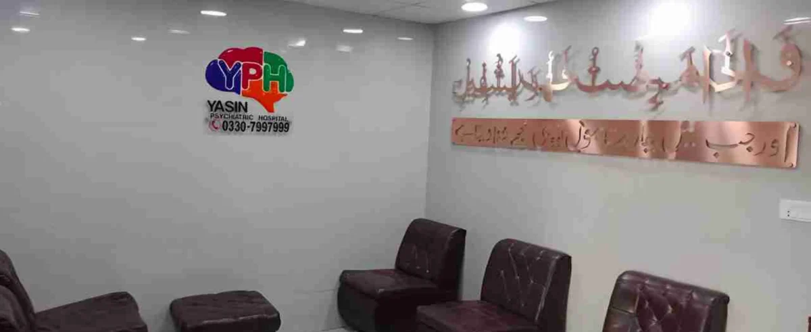

Director
Dr Shafiq Yasin
Director and Consultant Psychiatrist
Outpatient consultations, inpatient care and ongoing mental health support for patients and families in Nazimabad, Karachi.

The key to a good quality of life is directly related to a stable and peaceful mind.
Yasin Psychiatric Hospital offers outpatient evaluation, inpatient care and an on-site pharmacy that dispenses quality medication, all in Nazimabad, Karachi.
The ability to observe, listen and take both the present picture and the longer history into account is essential for the right evaluation. That is how our team approaches every patient.
From a first opinion to structured hospital care, the team supports patients and families at each stage.
Outpatient assessment and review of an existing diagnosis or treatment plan.
Learn moreStructured hospital care for patients who need closer monitoring.
Learn moreSupport for people experiencing drug, alcohol or prescription medication dependence.
Learn moreAn on-site pharmacy that dispenses prescribed psychiatric medication.
Learn moreRemote psychiatric appointments and follow-up when an online visit is suitable.
Learn moreDirector and Consultant Psychiatrist

Psychiatrist

Psychiatrist
The team considers your medical history, concerns and preferences when discussing care. Where medication is appropriate, Dr Shafiq Yasin discusses the options with you and works with you to plan your care.
Getting to know your situation comes before any decision about treatment.
You are told which medications might help and why, and your questions are answered along the way.
Your treatment plan sets out the purpose and expected outcomes, and can be adjusted as you go.
Call reception to confirm the clinician, appointment time and whether a remote consultation is available.
If you have them, bring relevant reports, previous prescriptions and a list of your current medicines.
Visit Swiss Tower in Block 1, Nazimabad. Use the directions link to plan your route.
Ask reception about appointments, admissions or telepsychiatry.
Call +92 330 7997999Call reception to ask about appointment options and the available clinicians.
The hospital offers telepsychiatry. Ask reception about availability and whether a remote visit is suitable.
Follow-up is arranged around your clinical needs and progress. Ask your clinician about the timing at your appointment.
Tell your prescribing clinician about any side effects so you can discuss your concerns and options.
The duration varies by person and treatment plan. Discuss timing and any changes with your prescribing clinician.
Contact reception. Your clinician may want to review your treatment before renewing a prescription.
Ask the hospital pharmacy or your local pharmacist how to return unwanted or expired medicines for safe disposal.
Call to confirm clinic hours and your doctor’s availability before travelling.